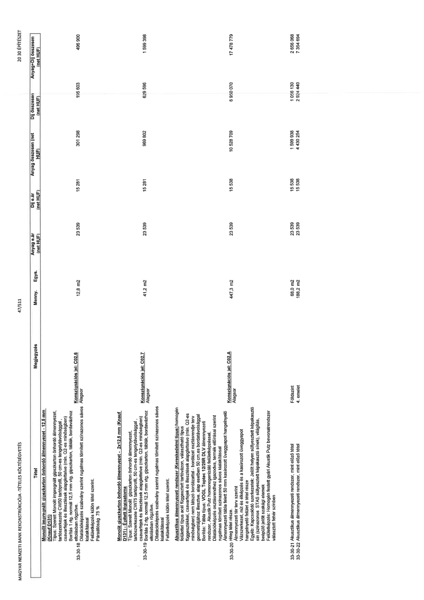

| Tétel | Megjegyzés | Menny. | Egys. | Anyag e.ár (net HUF) | Díj e.ár (net HUF) | Anyag összesen (net HUF) | Díj összesen (net HUF) | Anyag+Díj összesen (net HUF) |
|---|---|---|---|---|---|---|---|---|
| 33-30-18 Monolit impregnált gipszkarton önhordó álmennyezet - 12,5 mm (Típus: D131) Típus: Szerelt monolit impregnált gipszkarton önhordó álmennyezet, függesztett típus fém tartószerkezetre (szélesség: 50 cm-es távolságban) választható gyártó kompatibilis függesztőkkel, nem látszó bordázattal - alap esetben 50 cm-es bordatávolsággal csavarfejek és illesztékek alapglettelve (min. Q2-es minőségben) Borítás 1 rtg. normál 12,5 mm vtg. gipszkarton, táblák, bordavázhoz eltolásban rögzítve. Dilatációképzés szabvány szerint rugalmas tömített szinazonos sávos kialakítással Felületképzés külön tétel szerint. Paraállóság 75 % | Konszignációs jel: C02.6 Alagsor | 12,8 | m2 | 23 539 | 15 281 | 301 298 | 195 603 | 496 900 |
| 33-30-19 Monolit gipszkarton önhordó álmennyezet - 2x12,5 mm (Knauf D131 - Épített lécstorna) Típus: Szerelt monolit gipszkarton önhordó álmennyezet, függesztett típus fém tartószerkezetre (szélesség: 50 cm-es távolságban) választható gyártó kompatibilis függesztőkkel, nem látszó bordázattal - alap esetben 50 cm-es bordatávolsággal csavarfejek és illesztékek alapglettelve (min. Q2-es minőségben) Borítás 2 rtg. normál 12,5 mm vtg. gipszkarton, táblák, bordavázhoz eltolásban rögzítve. Dilatációképzés szabvány szerint rugalmas tömített szinazonos sávos kialakítással Felületképzés külön tétel szerint. | Konszignációs jel: C02.7 Alagsor | 41,2 | m2 | 23 539 | 15 281 | 969 802 | 629 596 | 1 599 398 |
| 33-30-20 Akusztikus álmennyezeti rendszer (Kereskedelmi típus) homogén felülettel típus acél függesztett tartóvázon, választható típus függesztőkkel, csavarfejek és illesztékek alapglettelve (min. Q2-es minőségben) nem látszó bordázattal - függesztett típus fém tartószerkezetre rendszergyártó előírásai szerint gyártó kompatibilis függesztőkkel, nem látszó bordázattal - a tétel geometriájához illesztve, alap esetben 50 cm-es bordatávolsággal Borítás: Tábla típus: VOGL Toptec 12/25R DLV álmennyezeti rendszer Acustic felület, VOGL Putz-bevonatú felületképzéssel Dilatációképzés és élzárás rendszergyártó előírásai szerint rugalmas tömített szinazonos sávos kialakítással Álmennyezeti tábla felett 50 mm kasírozott üveggyapot hangelnyelő réteg Ámennyezeti terv szerint Vázszerkezet, nút és élképzés és a kasírozott üveggyapot hangelnyelő felület a tétel része Egyéb: Kapcsolódó szerkezetek: Jelölt helyen süllyesztett képakasztó sín (színazonos STAS süllyesztett képakasztó sínek), világítás, beépülő jelölt szakági elemek Felületképzés: Homogén festett gyári Akustik Putz bevonatrendszer választott fehér színben | Konszignációs jel: C02.A Alagsor | 447,3 | m2 | 23 539 | 15 538 | 10 528 709 | 6 950 070 | 17 478 779 |
| 33-30-21 Akusztikus álmennyezeti rendszer, mint előző tétel | Földszint | 68,0 | m2 | 23 539 | 15 538 | 1 599 938 | 1 056 130 | 2 656 068 |
| 33-30-22 Akusztikus álmennyezeti rendszer, mint előző tétel | 4. emelet | 188,2 | m2 | 23 539 | 15 538 | 4 430 254 | 2 924 440 | 7 354 694 |
